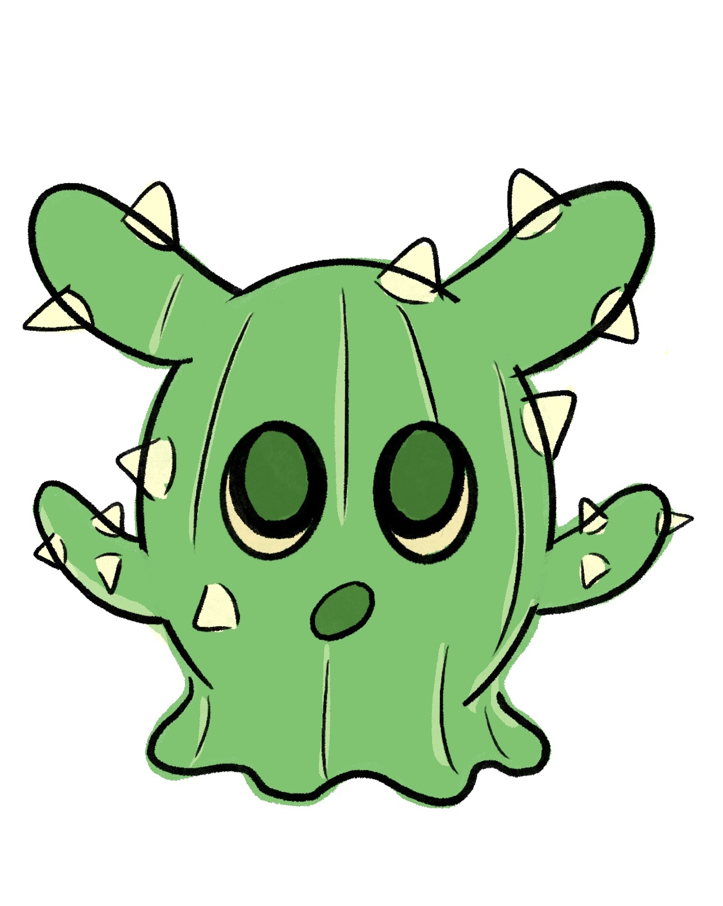

<
Make sure to tap the image to reveal The Prickly Mirage!!!
Opuntia Cacanapa (Texas Blue Pricklypear)


The Prickly Mirage
PLANT FACTS: The Opuntia Cacanapa is a resilient cactus that thrives in extreme heat and arid environments. Its thick, water-storing pads allow it to survive where few plants can. Its sharp spines protect the plant from herbivores and provide shade. By enduring drought and conserving resources, it brings stability and life to harsh ecosystems.
PLANT POWER: The Prickly Mirage switches into near-invisibility, bending heat and light to create illusions. These mirages disorient enemies while forming hidden sanctuaries that shield and conserve allies. Drawing on the cactus’s mastery of survival, Prickly Mirage turns problematic battlefields into strategic environments.